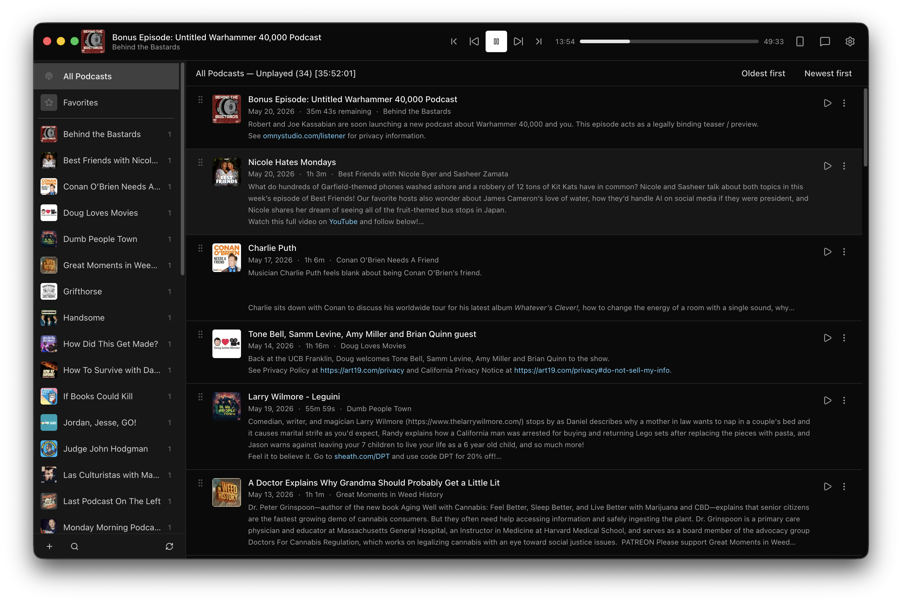

Podhomme is a desktop app for macOS, Windows, and Linux. Download, install, and go — no server setup, no Docker, no configuration. Just your podcasts, the way you want them. Also runs as a self-hosted web app for sharing the experience across a network.

Built for groups who want to share the listening experience without sharing a room.
Play, pause, seek, and skip — every action syncs instantly to every connected browser via Server-Sent Events.
Talk about what you're listening to without switching apps. Chat history persists so late joiners can catch up.
Find podcasts by name or paste an RSS URL directly. Import an existing OPML file to bring your whole library.
When an episode ends the next one starts automatically, respecting your current context — queue, podcast, or favorites.
A dedicated mobile layout is served automatically. Install it to your home screen for a native feel on iOS and Android.
Media Session API exposes transport controls to the macOS menu bar, iOS Control Center, and lock screen.
Video enclosures play in a collapsible panel below the top bar with minimize and fullscreen controls.
Optionally gate the entire app with a single shared password. No accounts, no user management.
Desktop app for macOS, Windows, and Linux. Bundles everything — no server, no Docker, no PM2. Just download and run. Auto-updates silently in the background.
Podhomme is also a self-hosted web app. Run it with Docker, PM2, or plain Node.js — anyone who knows the URL can open it in a browser and join in.
Playback, queue, and chat all sync in real time via Server-Sent Events, so every connected tab stays in lockstep without polling or refreshing.
Optionally gate the whole thing with a single shared password. No accounts, no OAuth, just a URL and a secret.
Self-hosting docs on GitHubPodhomme detects your device and serves a touch-friendly layout automatically — no separate app required.
Install it to your home screen as a PWA and it behaves just like a native app, complete with a headphones icon.